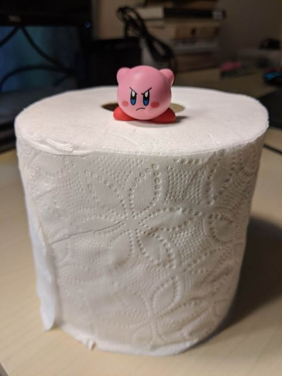
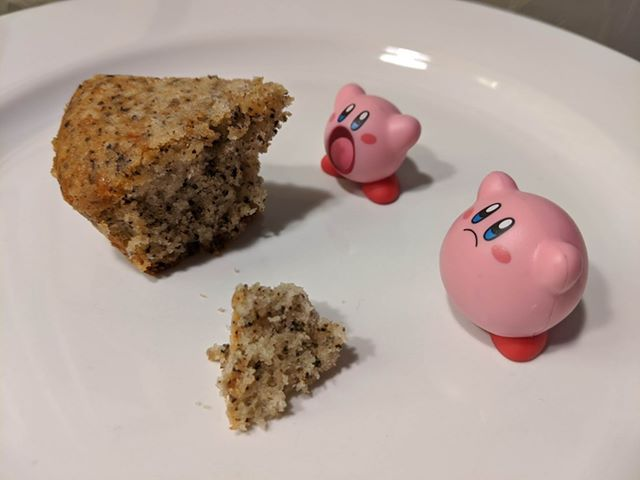

Updates from The Summit
Wednesday, March 18
Toilet paper has been on the news a lot...not only in the U.S. but also in Japan, HK, Australia. Many people's first impressions of how the virus was affecting society were through hearing about TP shortages. Don't hoard toilet paper. The supply chain is fine.
Tuesday, March 17
I am a TA for 6.031, Elements of Software Construction. At today's staff meeting, we tested out using zoom and webex for holding virtual office hours. I had not really used these tools before this month, but they seem pretty nifty and have useful features such as remote screen control. This picture took a laptop, a zoom session, two phones, and two Moris to create. How many Kirbys did it take?
Foreward
March 17, 2020: ᴄᴏᴠɪᴅ-19 has caused significant disruptions this year. MIT is essentially closed, all classes virtualized and lab research disrupted. Almost all the people I know are now at home, practicing social distancing. My roommates have 1) returned to Marietta, 2) followed (1) to Marietta, and 3) left for Princeton. My brother is staying with me in Cambridge, and we have decided to leave The Summit¹ only for essential² reasons.
I have decided to post daily, or close to daily, slice-of-life moments here, as a way to share the mundanities that create normalcy, as a signal of our presence.
Choosing a platform for this was difficult. I have a Wordpress blog, but it felt too formal to have to draft and publish posts. Too many casual acquaintances on Facebook, didn't want to clutter feeds with frequent posts. Instagram has the greatest potential, it seems, but I did not want to force non-users onto a new platform. So I have created a static page, hosted by Github Pages, that I plan to update daily. Maybe one of these days I will figure out a better content management or generation system.
¹ The Summit is the name of my apartment. ² We really only have a weak framework for this.Monday, March 16
The first post is retroactive. Yesterday, I made some earl grey yogurt cake. Adam and Dhriti took some on their road trip to Princeton! (Which Kirby is me, and which one is John?)
